A styled tray is one of the quickest ways to make a coffee table, console, or kitchen island feel finished for the season, without redoing anything else in the room.
The ones that actually work tend to build around a single anchor piece — a candle, a cluster of lit houses, a vase of greenery — and let everything else stay small and secondary.
That is what keeps a tray from turning into clutter.
It is also one of the more forgiving projects out there.
Rustic wood, sleek gold, soft neutral, even a little playful with gnomes or a tiny village — there is a version here for almost any home.
Below are 37 ways to put one together, from the five-minute setups to the more elaborate, special-occasion versions.

1. A Coffee Table Tray Built Around Books and a Wood Bowl
This is the tray to start with if you want something that works well past the holidays.
A stack of books and a carved wood bowl read as everyday styling, not a seasonal display.
Swap whatever sits in the bowl as the months change — pinecones now, something else once January rolls around — and the tray barely needs touching otherwise.
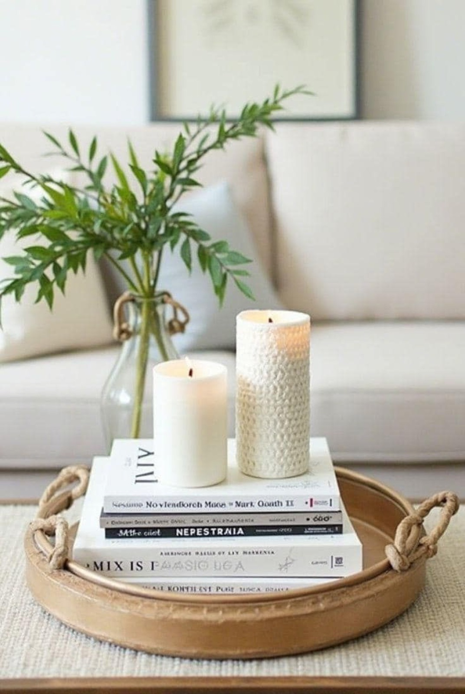

2. A Bowl of Pinecones and Fresh Citrus
Nothing on this list is faster to put together.
Pinecones and a few mandarins in a bowl smell like winter without a single piece of actual Christmas decor.
It works on a dining table, a console, or an island — simple enough that it never looks out of place.
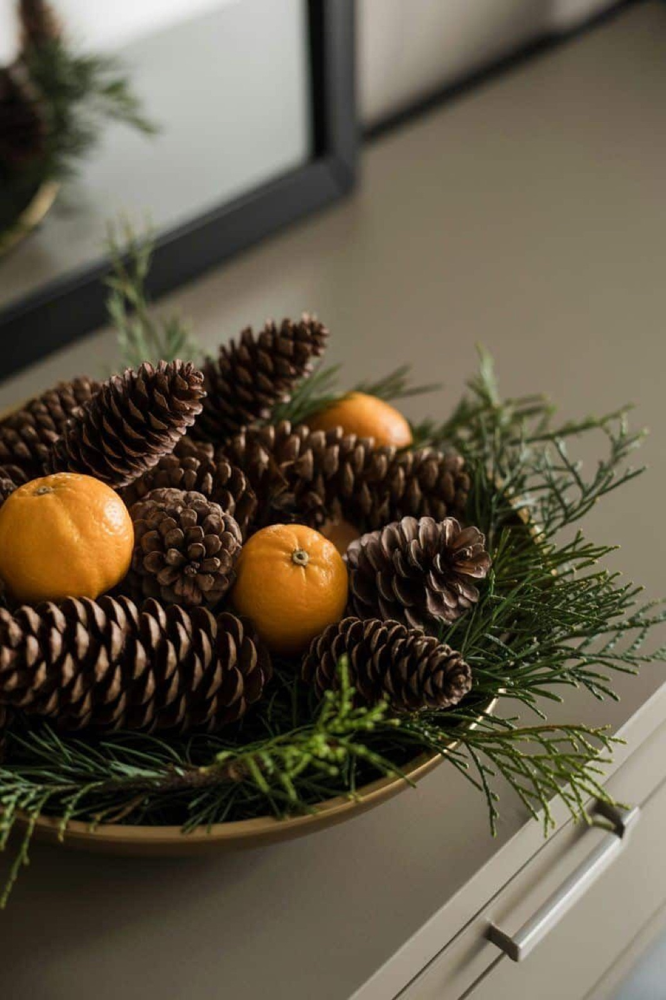
3. A Lit Gingerbread House Scene
A ceramic gingerbread house with real cutout windows does most of the work here — the warm light spilling through the windows is what sells the whole display.
Keep everything else minimal.
A couple of bottle brush trees are plenty; the house is detailed enough to carry the tray on its own.
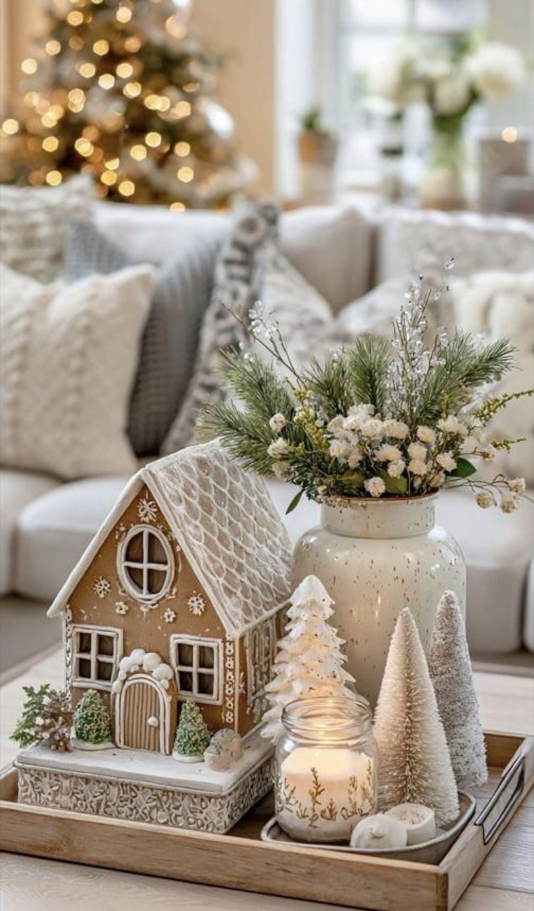
4. An All-Gold Tray with Brass and Mercury Glass
This is the most formal idea on the list — brass candlesticks and mercury glass votives, all in varied gold tones rather than one matched finish.
Save this one for a dining table or sideboard where you actually want it to read as special-occasion styling.
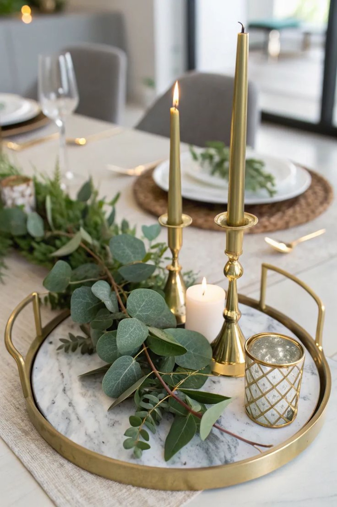
5. A Pair of Candlesticks with Pine
Two turned wood candlesticks and a little pine greenery give a tray height, which matters when everything else on a tray tends to sit flat.
This pairs especially well with a tray in front of a gallery wall or bookshelf — the height keeps it from disappearing into a busy background.
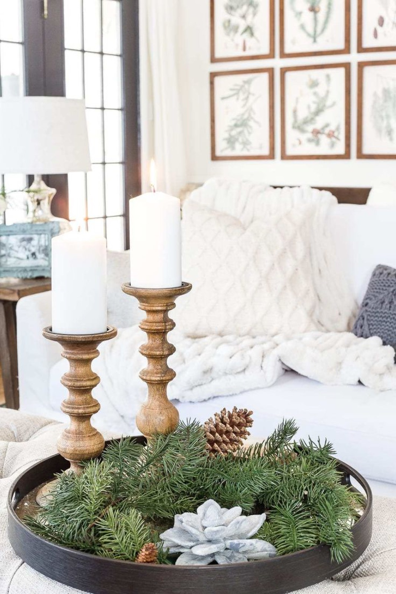
6. A Bedside Tray with White Tulips
Winter styling does not have to stay in the living room.
White tulips and a couple of rolled candles bring the same mood to a nightstand or dresser.
Tuck a folded throw next to the tray and the whole corner starts to feel like an invitation to slow down, not just a styled vignette.
VaryFloral 10Pcs White Fake Tulips with Stems
Shop on Amazon7. An All-White, Texture-First Tray
Skip color completely and lean on texture instead — birch logs, a flocked little tree, pinecones dusted in white.
It is one of the easiest palettes to get right.
White and natural wood rarely clash with anything, which also makes this one of the few trays that can reasonably stay out past the holidays.
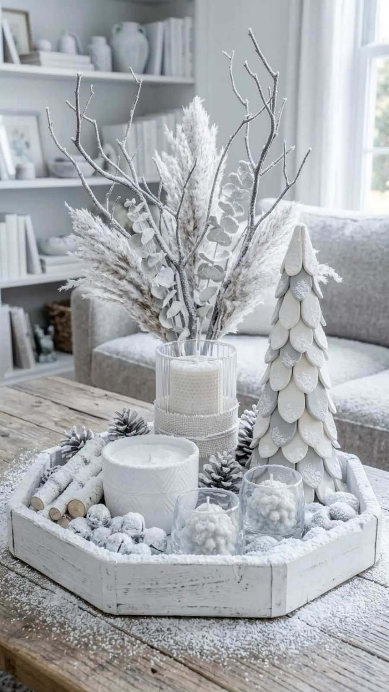
Mini White Christmas Tree, Small Flocked Pre-Lit Tabletop Tree
Shop on Amazon8. A Tiny Lit Christmas Village
A row of lit ceramic houses and a few bottle brush trees in varying heights turns a flat tray into a small, glowing scene.
Varying the tree heights keeps the village from reading as one flat row — it is a small detail that adds real depth.
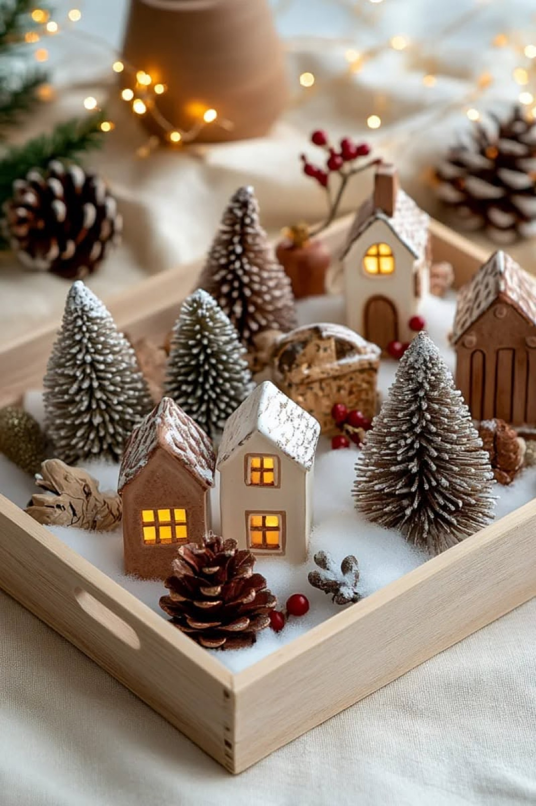

DN DECONATION Light Up Ceramic Village Houses, 3Pcs White
Shop on Amazon9. A Softer Tray with Roses and a Reed Diffuser
Most winter trays lean rustic or sparkly.
Dusty pink roses and a reed diffuser take it somewhere quieter and a little more romantic instead.
The color reads as elegant rather than Valentine's-specific, so there is no rush to pack it away once the holidays wrap up.
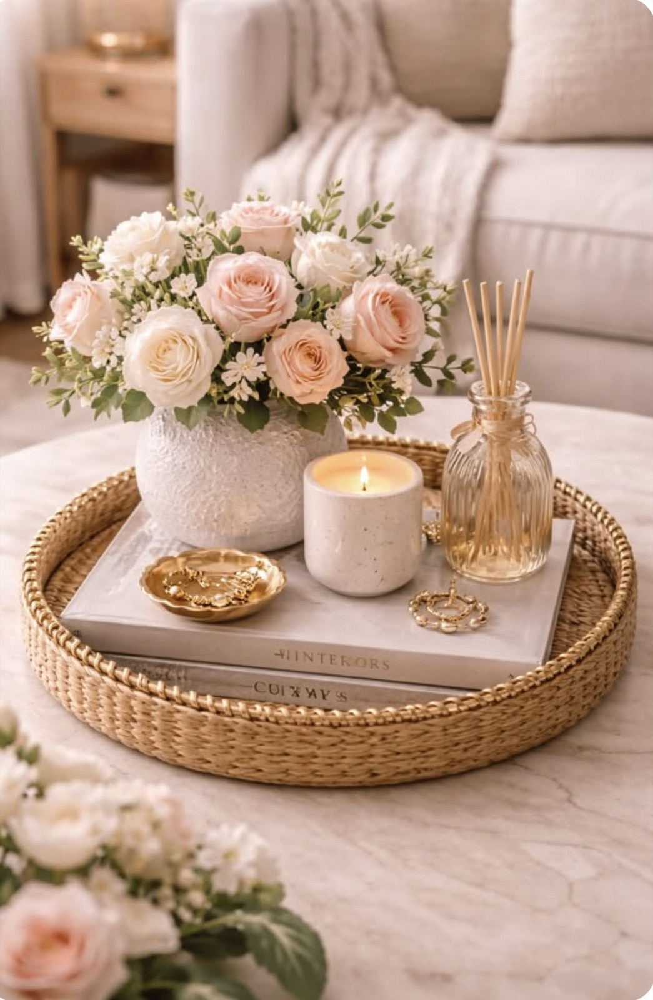
10. A Mini Potted Tree Next to a Warm Candle
This is about as low-effort as a winter tray gets.
A small potted tree and a candle sitting right beside it is genuinely a five-minute setup.
Add one or two small ceramic figures if the tray still looks a little bare, but it honestly does not need much more than that.

14" Tabletop Christmas Tree in Ceramic Boot Pot, Gold
Shop on Amazon11. A Graphic Black and White Snowman Tray
Black and white snowman pieces keep this tray feeling more broadly wintery than Christmas-specific, so it earns a longer shelf life into January.
A wood bead garland draped loosely across the tray softens the graphic palette without taking away from it.
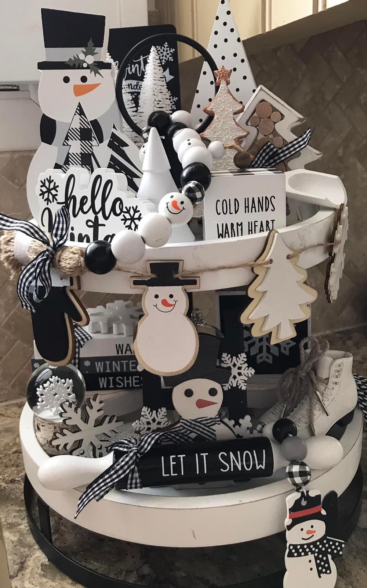
12. A Wood Slice Tray with Dried Orange Garland
The wood slice itself is most of the styling here — the natural edge and visible grain do not need much dressing up.
Bundle a few cinnamon sticks with twine next to the dried orange slices, and the whole thing reads as handmade rather than store-bought.
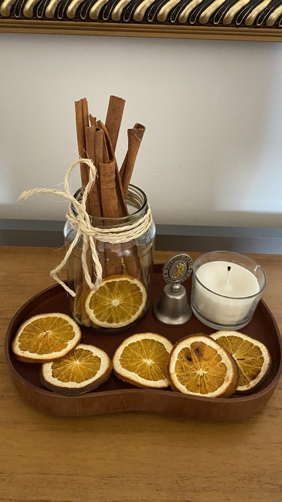
13. A Gold Tray with Lit Houses and Ornaments
Swapping rustic wood tones for metallic gold instantly dials up the glam factor, especially with a few lit ceramic houses as the anchor.
Loose gold ball ornaments fill the gaps, and a single sprig of eucalyptus keeps the whole thing from feeling too stiff.
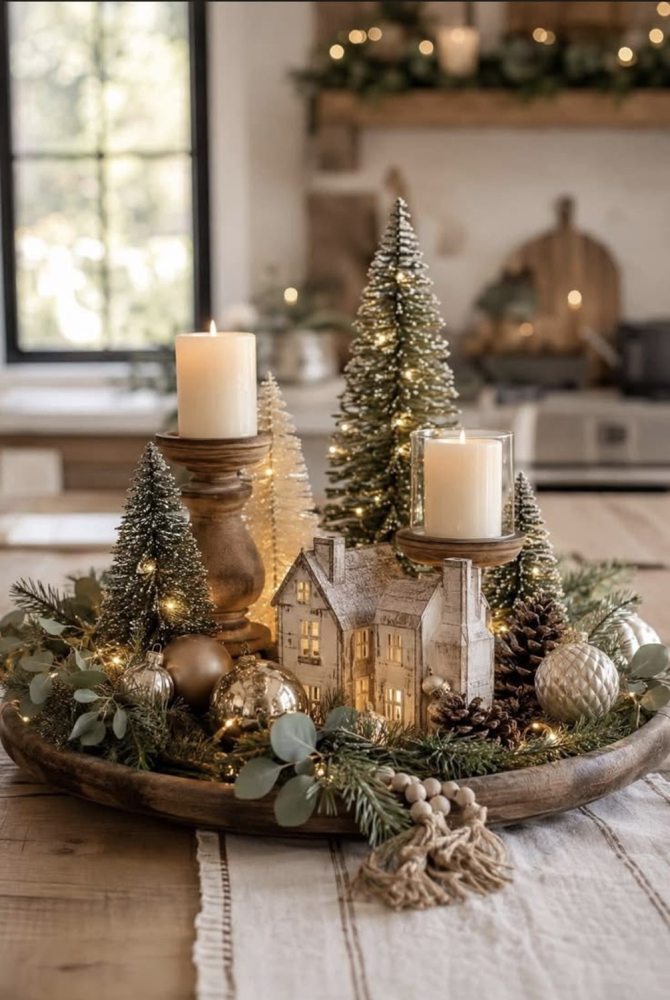
14. Red Ornaments Piled Into a Glass Jar
This is a clever trick for bulk ornaments that would otherwise look like leftover inventory: pile them into a clear glass jar instead of hanging them.
The glass lets the red show through from every angle, which gives you more visual payoff per ornament than scattering them individually ever would.
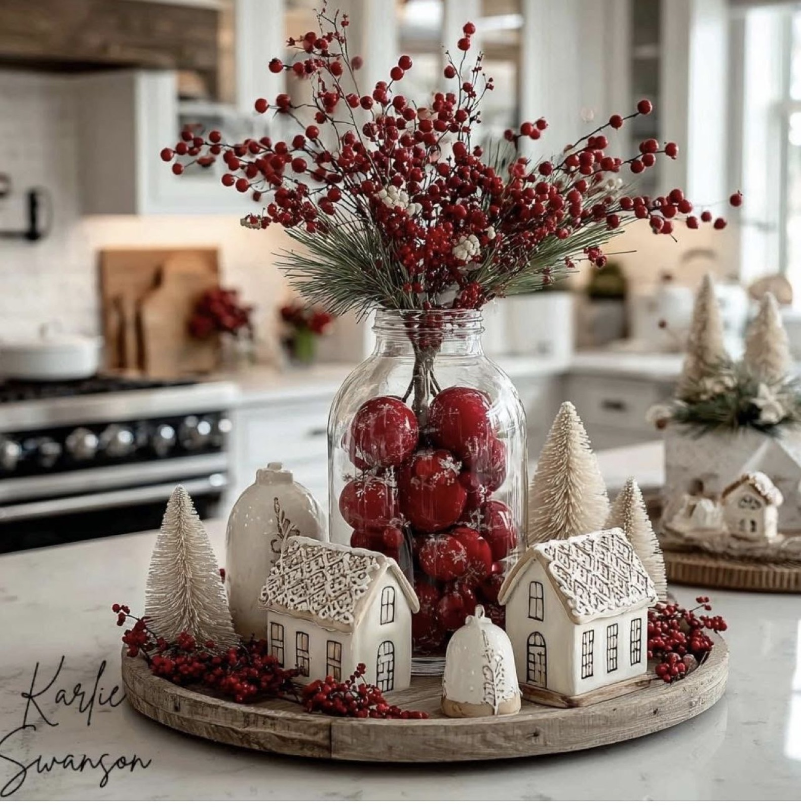
15. A Tiered Hot Cocoa Bar
A tiered stand with wood block signs turns a simple cocoa station into a real display, not just mugs set out on a counter.
Mini mason jars tied with twine hold the marshmallows or cocoa mix right in the display, so nothing has to come out of a cabinet.

16. A Woven Tray with a Wood Bead Garland
Natural woven texture and a wood bead garland pair beautifully with a simple white ceramic pitcher as the centerpiece.
Let the garland's tassels hang over the tray's edge instead of staying perfectly contained — it adds movement and keeps the display from feeling boxed in.
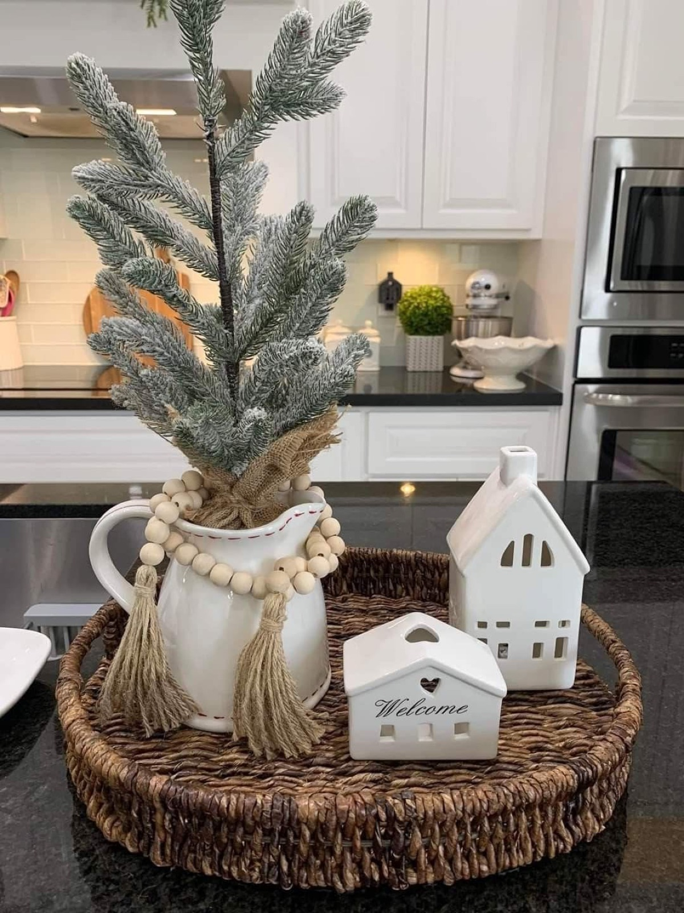
CVHOMEDECO Wood Grain Beads Garland with Tassels, Light Tan
Shop on Amazon17. A Warm Amber and Copper Tray
This leans more autumn than typical winter white, and it works beautifully straight through the colder months regardless.
Amber glass votives catch candlelight in a way clear glass cannot, which makes this an especially good choice for evening styling.
VOHO Amber Glass Votive Candle Holders, Set of 12
Shop on Amazon18. A Cutout Lantern Next to a Favorite Mug
A ceramic lantern with a cutout design throws an interesting pattern of light, which does more visual work than a plain candle holder.
Pair it with a seasonal mug you already own — this is an easy tray to build almost entirely from things already in the cabinet.
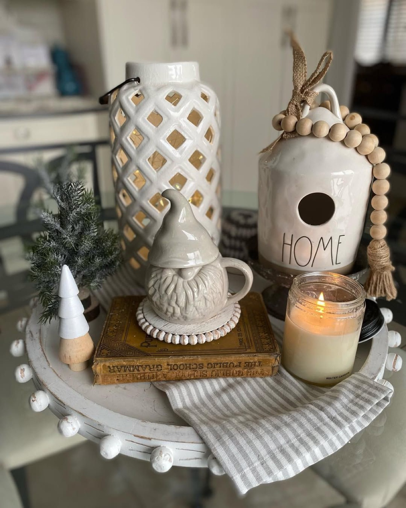
BEHIFL Christmas Gnome Ceramic Mug, 11oz
Shop on Amazon19. A Hot Cocoa Mug and Snow-Dusted Pinecones
A steaming mug next to a lit mini house is about as cozy as tray styling gets, especially on a coffee table you actually use in the evenings.
Snow-dusted pinecones and star anise scattered loosely around the base round it out without needing much else.
20. A Tray Built Around the Dessert Table
Turning treats into part of the display, rather than hiding them until serving time, is an easy way to dress up a dessert table.
Group the treats loosely by color or type instead of scattering them — it reads as styled instead of like leftovers.
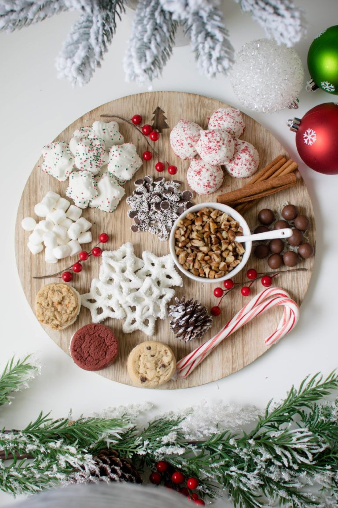
21. A Woodland Scene with Deer and Moss
Deer and rabbit figurines over a thick layer of faux moss trade the usual red-and-green for something quieter and more nature-inspired.
The moss base is what ties the figures together — without it, they would just look scattered rather than like a little forest floor.
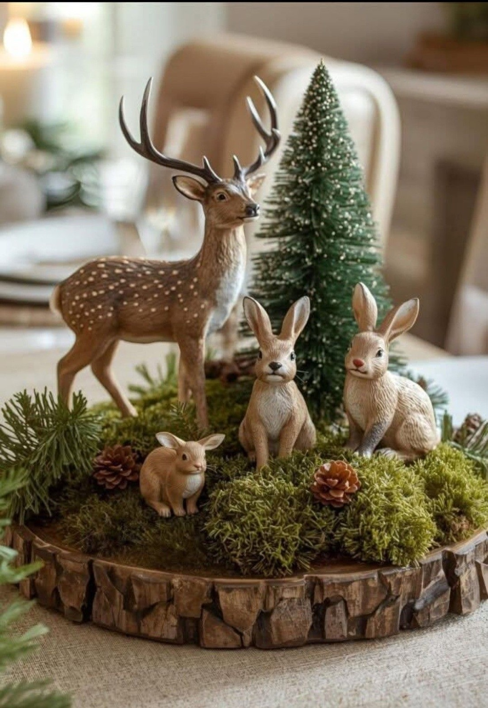
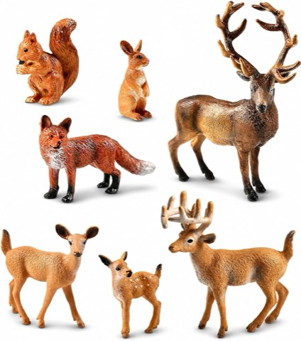
7 Pcs Woodland Animal Figurines Set with Deer Family, Fox, Squirrel & Rabbit
Shop on Amazon22. Stacked Books and a Large Dough Bowl
A bigger dough bowl gives you more surface area than a typical small tray, and stacking the books unevenly keeps it from feeling stiff.
Whatever sits in the bowl is the easiest thing to swap out, so this setup barely needs rethinking as the seasons shift.
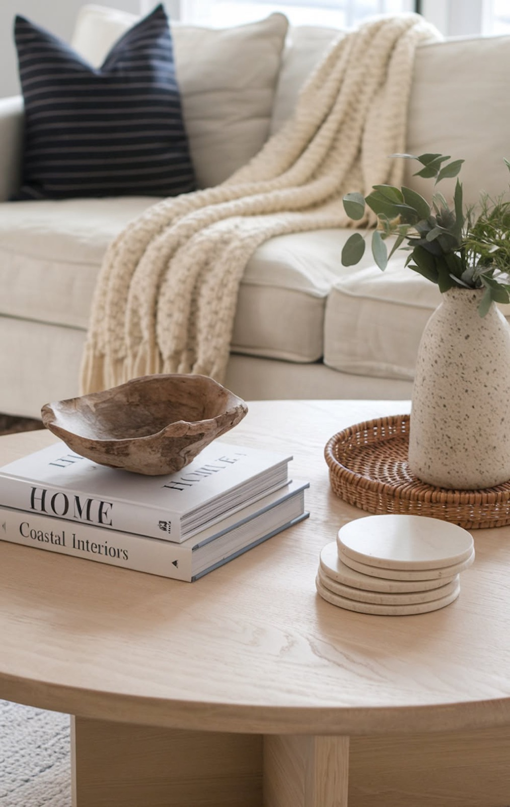
Set of 3 Decorative Books for Home, XL Coffee Table Books
Shop on AmazonMie Creations 16'' Large Wooden Dough Bowl for Decor
Shop on Amazon23. A Lit Village on the Kitchen Island
The same glowing village idea works even better on a kitchen island, somewhere you will actually walk by all day instead of just in the evenings.
A marble or stone counter makes a particularly good backdrop — the cool surface contrasts nicely with the warm light from the houses.
Arakulago Large Bottle Brush Christmas Trees, 3Pcs Snow Flocked
Shop on AmazonCHUANGLI 9 Pcs Light Up Christmas Village Set, Lighted Ceramic Houses & Trees
Shop on Amazon24. A Silver Tray Scattered with Paper Stars
Paper star ornaments add a bit of sparkle without tipping into full glitter-and-glam territory, especially scattered loosely rather than arranged too neatly.
A small tin house lantern anchors the tray, giving the stars something to gather around instead of floating without a focal point.
10 Strands Pre-Strung Christmas Paper Star Garland
Shop on AmazonRustic Galvanized Metal Tin House Tea Light Votive Candle Holder
Shop on Amazon25. A Vanity Tray with Eucalyptus
Winter styling tends to skip the bathroom entirely, but a few eucalyptus stems and a lidded jar bring the same mood to a vanity.
The jar keeps cotton rounds or other small essentials contained, so the tray stays decorative instead of turning into clutter.
120 Pcs Mixed Artificial Eucalyptus Leaves Stems Bulk
Shop on AmazonDecorative Ceramic Jar with Lid, Apothecary Canister
Shop on Amazon26. Frosted Branches in Glass Hurricanes
White frosted branches add height and texture without introducing any color at all, which keeps the whole tray feeling calm and a little quiet.
This works best in a room that is already neutral — it will not fight with anything else going on in the space.
12Pcs Artificial Snow Frosted White Berry Stems
Shop on AmazonGlass Hurricane Candle Holder, 3pcs Clear Cylinder Set
Shop on Amazon27. A White and Gold Deer Pairing
Two different finishes that should not work together somehow do — a white ceramic deer next to a small gold-toned tiered tree.
The combination is soft enough to belong in a room that is not otherwise decorated for the season.
DECRZPB Ceramic Ornament White Deer, Porcelain Figurine
Shop on AmazonJETEHO Set of 3 White Ceramic Christmas Trees that Light Up
Shop on Amazon28. A Gold Deer with Small Framed Art
A framed winter print adds something most trays are missing: a focal point that is not sitting at the same flat level as everything else.
A gold deer figurine and a couple of brass candlesticks nearby tie the metallic tones together without needing to match exactly.
Gold Christmas Reindeer Decor, Set of 3 Resin Standing Deer Figurines
Shop on AmazonVintage Winter Pictures Snowy Forest, Small Framed Art 8"x10"
Shop on Amazon29. Woven Wicker Trees Instead of Flocked Ones
Swapping the usual velvet or flocked trees for woven wicker brings in a warmer, more textural material that still reads as winter.
A few red berry stems tucked between the trees add just enough color against all that natural tone.
Sieral 5 Pcs Wicker Rattan Christmas Tree Table Decor
Shop on AmazonSggvecsy 6 Pack Artificial Red Berry Stems, Holly Berry Branches
Shop on Amazon30. Cocoa Jars with Handwritten Gift Tags
Jars of cocoa mix tied with handwritten tags feel more personal than a store-bought display, especially for a small gathering.
A sprig of greenery between the jars keeps it from looking like packaging stacked on a stand.
Hot Chocolate Mix Gift Set, 16-Pack Gourmet Hot Cocoa Sampler
Shop on AmazonHot Chocolate Station Gift Set with Glass Jars
Shop on Amazon31. A Black Tray with a Gold Glitter Vase
Matte black and warm gold make an unexpectedly modern pairing — a black deer figurine next to a glittered vase of pine branches.
This reads as polished without being fussy, which makes it a strong fit for a kitchen island or console.
DN DECONATION 2Pcs Black Reindeer Figurine Decoration, Resin Deer Statues
Shop on AmazonGlasseam Gold Cylinder Vases for Centerpieces, 6 Mercury Glass Vase Set
Shop on Amazon32. Cotton Stems for a Softer, Neutral Look
Cotton stems bring in a pale, soft texture most winter trays skip entirely, especially paired with simple wooden snowflakes.
The whole palette stays in the same natural family, which suits a more minimalist home better than most ideas on this list.
5 Bunches Cotton Stems, Natural Cotton Flowers with Birch Branch
Shop on AmazonWenqik 16 Pcs Winter Wooden Snowflake Tabletop Decor
Shop on Amazon33. Pillar Candles Under Glass Cloches
Glass domes turn ordinary pillar candles into something that feels more protected and a little more special.
Velvet cone trees in a mix of colors soften all that glass — this look tends to suit a more formal room best.
Holibanna Decorative Glass Cloche Candle Holder, Glass and Wood
Shop on Amazon6 Pcs Velvet Christmas Cone Trees, Red Green White Flocked
Shop on Amazon34. A Simple Wood Riser for Instant Height
This is not really its own look so much as a trick that improves almost every other idea on this list: set the tray on a riser.
A velvet ribbon tied loosely around the arrangement adds a surprising amount of polish for almost no effort.
WILDMOS Decorative Round Wood Riser for Display, 12-inch
Shop on AmazonRoyal Imports Wired Red Velvet Christmas Ribbon with Gold Edge
Shop on Amazon35. A Hot Cocoa and Cookie Tray Meant to Be Used
Some trays are meant to be looked at; this one is meant to be used.
Matching snowflake mugs keep it cohesive even once people start grabbing drinks.
A bundle of cinnamon sticks nearby adds scent to the table without needing a separate candle burning.
Baderke 12 Pcs Ceramic Christmas Snowflake Mug with Ribbon
Shop on AmazonYamees Cinnamon Sticks, Whole Cloves, and Star Anise, Bulk 18 Oz
Shop on Amazon36. A Low-Effort Sofa-Side Tray
Pinecones and a candle next to the sofa bring winter styling right to where you actually sit, not just somewhere you walk past.
A plaid pillow nearby ties it into the rest of the seating without needing to match any colors exactly.
Pine Cones Uniquely Shaped Real Natural Pinecones in Bulk
Shop on AmazonJOJOGOGO Christmas Red Tartan Plaid Pillow Covers, 20x20 Set of 2
Shop on Amazon37. A Playful Black and White Gnome Tray
A single plush gnome gives a tray real personality, especially in a house where kids love spotting it on the shelf.
A simple wood snowflake sign nearby reinforces the season without needing busy patterns or extra text-heavy pieces.
UXORSN 3Pcs Lighted Christmas Gnome Decorations, 14 Inch
Shop on AmazonKORMMCO Christmas Snowflake Decor, 4 Piece Wood Signs
Shop on AmazonHow Many Trays You Actually Need
Thirty-seven ideas is far more than any one house needs.
Pull a color palette from one, a centerpiece from another, and build something that is actually yours.
Start with the tray itself — wood, metal, and woven all set a different tone before anything else goes on top.
The trays that work best mix heights: something tall like a candle or branch, something low like pinecones or ornaments, and one soft element like greenery or ribbon.
That contrast is what makes a tray look styled instead of just placed there.